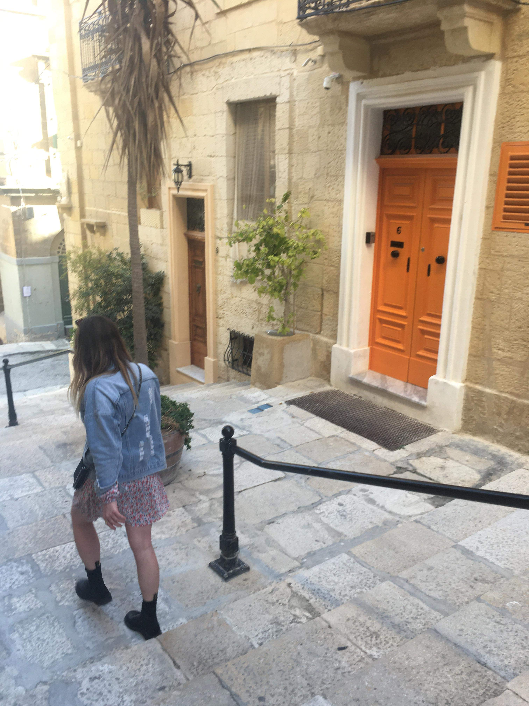

Bienvenue !
MON SLOGAN

Mon parcours : Je suis parti vivre sept mois à Malte pour travailler et améliorer mon niveau d'anglais.
Mes expériences : J'ai travaillée deux ans en alternance dans une boutique de vêtement masuclin haut de gamme à Nantes.
Mes diplômes : j'ai un Bac STMG spécialité Marketing puis j'ai valider un BTS MUC en alternance ce qui m'a permis de me créer des compétences en marketing et en vente. Maintenant j'ai décidé de commencer un bachelor 3 Web marketing & Social Media dans le but de me former et me spécialiser dans le marketing et l acommunication digitale.
2020/2021 Bachelor 3 Webmarting & Social Media en contrat d'apprentissage
2017/2019 BTS Management des Unités Commerciales en contrat de professionnalisation
2013/2016 BAC Sciences et Technologies du Management et de la Gestion, mention ab
Mon lien
nom
prénom
âge
domaine d'activité
Mon expérience